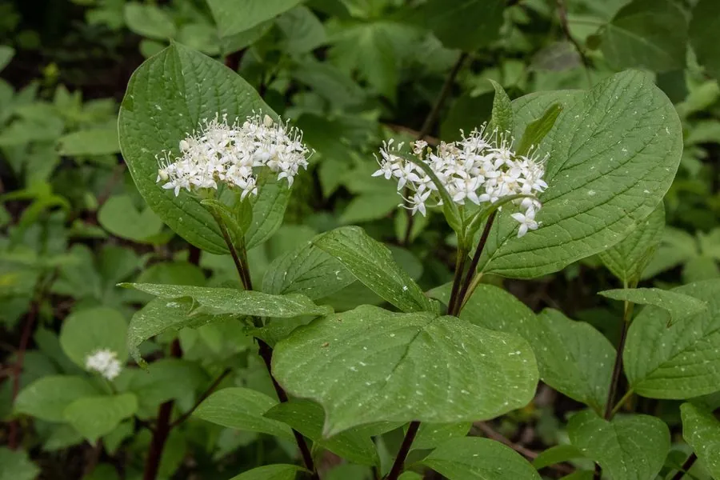

灌木与花木 · 植物界
红瑞木 Cornus alba

山茱萸科落叶灌木，枝条冬季鲜红、落叶后格外醒目，耐寒性强，是北方冬季景观与观枝观叶的优良树种。
- 分类
- 门被子植物门纲木兰纲目山茱萸目科山茱萸科属山茱萸属
- 栖息环境
- 海拔 1000–2500 米的河岸、沟谷与林缘，喜光耐寒、喜湿润
- 地理分布
- 中国东北、华北、西北；西伯利亚、朝鲜半岛有分布
- 保护级别
- 暂无评估；中国未列入国家重点保护野生植物名录
物种志
红瑞木为山茱萸科山茱萸属落叶灌木，高 2–3 米，枝条直立，幼枝鲜红色，老枝暗红。叶片对生，卵形至椭圆形，表面绿色，背面灰白色，入秋转为紫红色。花小，白色至淡黄色，组成顶生的伞房状聚伞花序，花期 5–6 月；核果斜卵形，成熟时白色或蓝白色，果期 8–9 月。
红瑞木原产西伯利亚、朝鲜半岛及中国东北、华北、西北等地，生于河岸、沟谷与林缘。它喜光，也耐半阴，耐寒性极强，适宜湿润、排水良好的土壤。冬季落叶后鲜红的枝条在雪景中十分醒目，常植于庭院、水边与草坪边缘，与常绿植物搭配形成色彩对比。枝条可编筐，树皮与叶可提取栲胶，根皮入药有清热解毒之效。
形态与习性
- 株高2–3 m，幼枝鲜红色
- 花期5–6 月，白色伞房状聚伞花序
- 果期8–9 月，核果白色或蓝白色
- 光照喜光，也耐半阴
- 水分喜湿润，耐水湿
- 土壤疏松肥沃、排水良好的壤土
- 主要用途冬季观枝、庭院水边绿化，枝条编筐
趣味知识
- 红瑞木落叶后鲜红的枝条在雪景中格外醒目，是北方冬季少有的观枝树种。
- 它的枝条在秋季开始转红，越到寒冬颜色越鲜艳。
- 红瑞木与山茱萸同科，果实成熟时为白色或蓝白色。
- 树皮与叶含鞣质，可提取栲胶，根皮在民间入药。